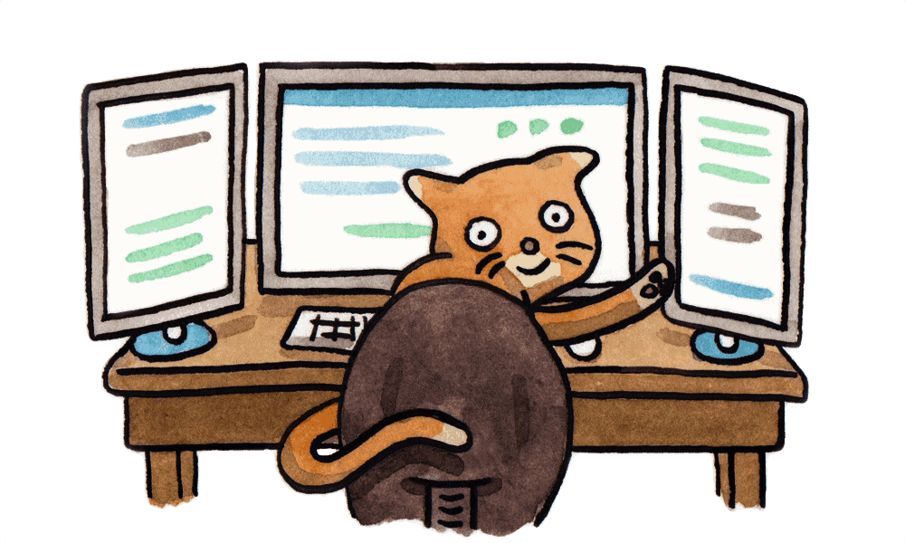

速度超快。
Yarn 缓存了每个下载过的包，所以再次使用时无需重复下载。 同时利用并行下载以最大化资源利用率，因此安装速度更快。


超级安全。
在执行代码之前，Yarn 会通过算法校验每个安装包的完整性。
超级可靠。
使用详细、简洁的锁文件格式和明确的安装算法，Yarn 能够保证在不同系统上无差异的工作。

Yarn 缓存了每个下载过的包，所以再次使用时无需重复下载。 同时利用并行下载以最大化资源利用率，因此安装速度更快。
在执行代码之前，Yarn 会通过算法校验每个安装包的完整性。
使用详细、简洁的锁文件格式和明确的安装算法，Yarn 能够保证在不同系统上无差异的工作。
如果你以前安装过某个包，再次安装时可以在没有任何互联网连接的情况下进行。
不管安装顺序如何，相同的依赖关系将在每台机器上以相同的方式安装。
Yarn 有效地对请求进行排队处理，避免发起的请求如瀑布般倾泻，以便最大限度地利用网络资源。
从 npm 安装软件包并保持相同的包管理流程。
重试机制确保单个请求失败并不会导致整个安装失败。
将依赖包的不同版本归结为单个版本，以避免创建多个副本。